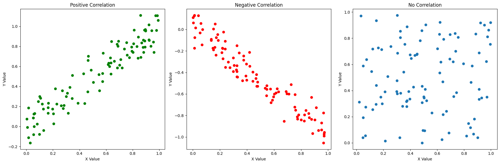

import numpy as np
import pandas as pd
import matplotlib.pyplot as pltHello, dear readers! As I embark on this journey to explore and write about statistical, financial concepts, I want to start with a candid confession: I am quite new to this field myself. This blog is as much a part of my learning process as I hope it will be for yours. That said, let the learning begin!
- Introduction
- Introduction and importance
- benifit of data analysis
- Definition
- Pearson - most commonly used
- Briefly mention spearmans rank, kendalls tau
- Calculation and interpretation
- Pearson formula
- Interpretation
- example code to show positive, negative and no corellation
- Advantages
- ease of interpretation
- useful in preliminary data analysis
- Limitations
- Correlation does not imply causation
- outliers affecting corellation
- limitation when dealing with non-linear relationships
- shifting breaks corellation (time lag)
Introduction
The correlation coefficient is a statistical measure of the strength of a linear relationship between two variables. It is widely used across several fields including finance. This post aims to give a brief overview, usecases and pitfalls while using the concept of corellation specifically the Pearson’s coefficient which is widely used.
What is the Pearson’s corellation coefficient?
Its values can range from -1 to 1. A correlation coefficient of -1 describes a perfect negative, or inverse, correlation, with values in one series rising as those in the other decline, and vice versa. A coefficient of 1 shows a perfect positive correlation, or a direct relationship. The closer to 0 the correlation coefficient is, the weaker the relationship between the variables. Person’s correlation \(r\) is given by:
\[ r(X, Y) = \frac{\text{cov}(X, Y)}{\sigma_X \times \sigma_Y} \]
where,
- \(cov\) is the covariance between \(X\) and \(Y\)
- \(\sigma\) represents the standard deviation.
Now, let’s create sample plots to show positive, negative and zero corellations:
# Positive correlation
X_pos = np.random.rand(100)
Y_pos = X_pos + np.random.normal(0, 0.1, 100) # adding some noise
# Negative correlation
X_neg = np.random.rand(100)
Y_neg = -X_neg + np.random.normal(0, 0.1, 100) # adding some noise
# No correlation
X_no_corr = np.random.rand(100)
Y_no_corr = np.random.rand(100)
plt.figure(figsize=(18, 6))
# Plot for positive correlation
plt.subplot(1, 3, 1)
plt.scatter(X_pos, Y_pos, color='green')
plt.title('Positive Correlation')
plt.xlabel('X Value')
plt.ylabel('Y Value')
# Plot for negative correlation
plt.subplot(1, 3, 2)
plt.scatter(X_neg, Y_neg, color='red')
plt.title('Negative Correlation')
plt.xlabel('X Value')
plt.ylabel('Y Value')
# Plot for no correlation
plt.subplot(1, 3, 3)
plt.scatter(X_no_corr, Y_no_corr)
plt.title('No Correlation')
plt.xlabel('X Value')
plt.ylabel('Y Value')
plt.tight_layout()
plt.show()
# Calculate correlation coefficient
corr_coef_pos = np.corrcoef(X_pos, Y_pos)[0, 1]
corr_coef_neg = np.corrcoef(X_neg, Y_neg)[0, 1]
corr_coef_no_corr = np.corrcoef(X_no_corr, Y_no_corr)[0, 1]
print(f"Positive correlation coefficient: {corr_coef_pos}")
print(f"Negative correlation coefficient: {corr_coef_neg}")
print(f"Zero correlation coefficient: {corr_coef_no_corr}")
Positive correlation coefficient: 0.9433421569708851
Negative correlation coefficient: -0.9563626173762685
Zero correlation coefficient: 0.09457565533744634In the above example, we can make the following observations:
- The correlation coefficient is close to 1 for the positively correlated
- The correlation coefficient is close to -1 for the negatively correlated
- The correlation coefficient is close to 0 for the random samples